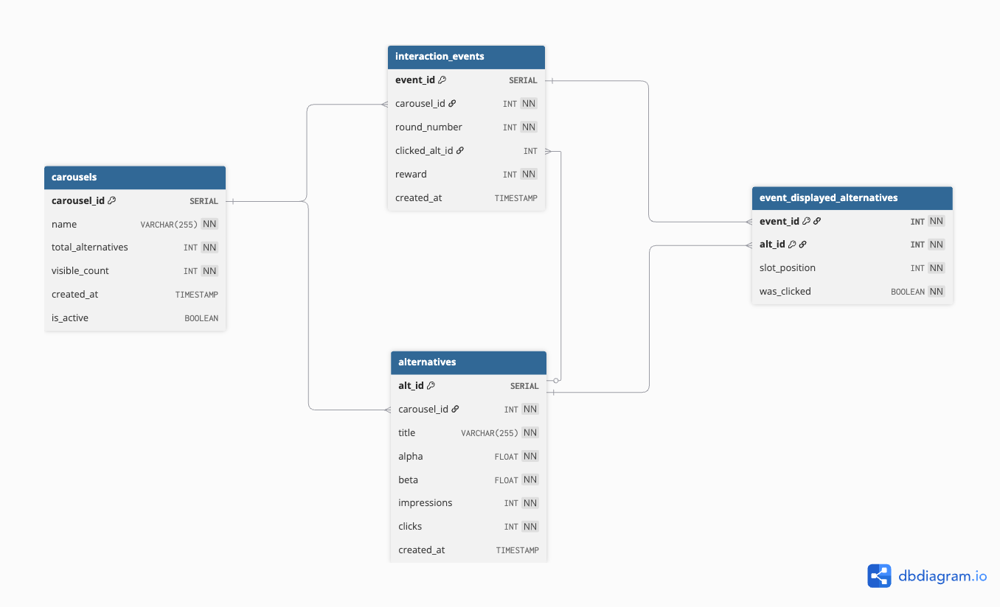
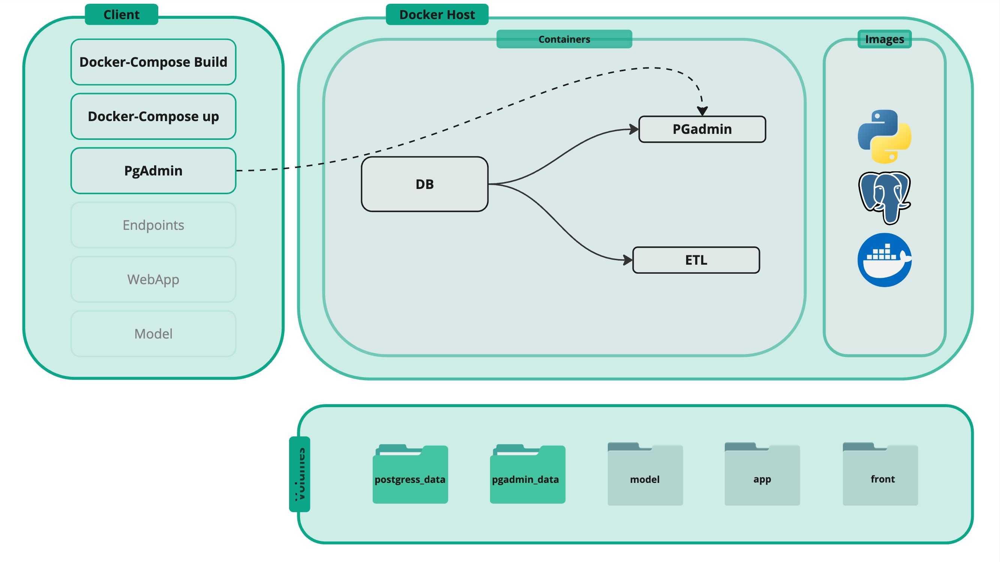
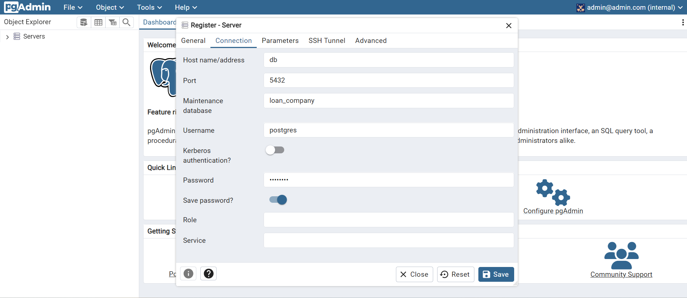

Database | PostgreSQL
Schema Design, Setup, and ERD
Overview
At this page focuses on setting up and interacting with a PostgreSQL database for the Bayesian Carousel Bandits project.
It covers:
- Running PostgreSQL with Docker
- Accessing the database using pgAdmin
- Designing the relational schema for the carousel application
- Creating tables using SQL
- Understanding how the database supports the Streamlit MVP and the future FastAPI backend
This database is designed for an interactive product where users create carousel projects, display a subset of alternatives, collect click feedback, and analyze the results over time.
Database Design
The database is built around the lifecycle of a carousel experiment.
A user creates a carousel project, defines how many alternatives exist, chooses how many are visible per round, and then records user interaction events as the experiment runs.
The schema includes the following main entities:
carousels— stores carousel projectsalternatives— stores the bandit alternatives belonging to a carouselinteraction_events— stores each user interaction roundevent_displayed_alternatives— stores which alternatives were shown during each event and whether they were clicked
This structure is appropriate for:
- application state,
- online learning updates,
- and future analytics and reporting

Docker Architecture
For this session we are going to build

Database Schema (SQL Representation)
Below is the SQL version of the proposed schema:
CREATE TABLE carousels (
carousel_id SERIAL PRIMARY KEY,
name VARCHAR(255) NOT NULL,
total_alternatives INT NOT NULL CHECK (total_alternatives > 0),
visible_count INT NOT NULL CHECK (visible_count > 0),
created_at TIMESTAMP DEFAULT CURRENT_TIMESTAMP,
is_active BOOLEAN DEFAULT TRUE
);
CREATE TABLE alternatives (
alt_id SERIAL PRIMARY KEY,
carousel_id INT NOT NULL REFERENCES carousels(carousel_id) ON DELETE CASCADE,
title VARCHAR(255) NOT NULL,
alpha FLOAT NOT NULL DEFAULT 1,
beta FLOAT NOT NULL DEFAULT 1,
impressions INT NOT NULL DEFAULT 0,
clicks INT NOT NULL DEFAULT 0,
created_at TIMESTAMP DEFAULT CURRENT_TIMESTAMP
);
CREATE TABLE interaction_events (
event_id SERIAL PRIMARY KEY,
carousel_id INT NOT NULL REFERENCES carousels(carousel_id) ON DELETE CASCADE,
round_number INT NOT NULL,
clicked_alt_id INT NULL REFERENCES alternatives(alt_id) ON DELETE SET NULL,
reward INT NOT NULL CHECK (reward IN (0, 1)),
created_at TIMESTAMP DEFAULT CURRENT_TIMESTAMP
);
CREATE TABLE event_displayed_alternatives (
event_id INT NOT NULL REFERENCES interaction_events(event_id) ON DELETE CASCADE,
alt_id INT NOT NULL REFERENCES alternatives(alt_id) ON DELETE CASCADE,
slot_position INT NOT NULL,
was_clicked BOOLEAN NOT NULL DEFAULT FALSE,
PRIMARY KEY (event_id, alt_id)
);Schema Design
This schema supports both the current MVP and the future full-stack product.
carousels
Stores the main carousel project settings.
Columns:
carousel_id— unique identifiername— project nametotal_alternatives— total number of bandits in the projectvisible_count— how many alternatives are shown each roundcreated_at— creation timestampis_active— whether the carousel is active
alternatives
Stores all bandit alternatives for a given carousel.
Columns:
alt_id— unique alternative identifiercarousel_id— parent carouseltitle— alternative labelalpha— Beta prior/posterior alpha parameterbeta— Beta prior/posterior beta parameterimpressions— number of times shownclicks— number of clickscreated_at— creation timestamp
interaction_events
Stores one row per interaction round.
Columns:
event_id— unique interaction eventcarousel_id— associated carouselround_number— round indexclicked_alt_id— clicked alternative, if anyreward— 1 for click, 0 for no clickcreated_at— interaction timestamp
event_displayed_alternatives
Stores which alternatives were displayed in an event.
Columns:
event_id— parent eventalt_id— displayed alternativeslot_position— position in the visible carouselwas_clicked— whether that displayed alternative received the click
This table is important because it lets us reconstruct: - what was shown, - in what order, - and which alternative was selected
Creating Tables Using SQLAlchemy
Folder sructure
├── etl/
│ ├── data/
│ │ ├── alternatives.csv
│ │ ├── carousels.csv
│ ├── Database/
│ │ ├── __init__.py
│ │ ├── database.py
│ │ └── models.py
│ ├── __init__.py
│ ├── .env
│ ├── .python-version
│ ├── Dockerfile
│ ├── create_tables.py
│ ├── etl.py
│ ├── pyproject.toml
│ ├── README.md
│ ├── requirements.txt
│ └── uv.lockThe same schema can later be represented with SQLAlchemy models.
Database/database.py
Configuring the Database
"""
Database Configuration
"""
import os
from pathlib import Path
from dotenv import load_dotenv
from sqlalchemy import create_engine
from sqlalchemy.orm import sessionmaker, declarative_base
# --------------------------------------------------
# Load environment variables
# --------------------------------------------------
load_dotenv(Path(__file__).resolve().parents[2] / ".env")
# --------------------------------------------------
# Build DATABASE URL
# --------------------------------------------------
def _build_database_url() -> str:
database_url = os.environ.get("DATABASE_URL")
if database_url:
return database_url
db_user = os.environ.get("DB_USER")
db_password = os.environ.get("DB_PASSWORD")
db_name = os.environ.get("DB_NAME")
db_host = os.environ.get("DB_HOST", "db") # Docker default
db_port = os.environ.get("DB_PORT", "5432")
if db_user and db_password and db_name:
return f"postgresql+psycopg2://{db_user}:{db_password}@{db_host}:{db_port}/{db_name}"
raise RuntimeError(
"DATABASE_URL is not set and DB_USER/DB_PASSWORD/DB_NAME are incomplete."
)
DATABASE_URL = _build_database_url()
# --------------------------------------------------
# Engine
# --------------------------------------------------
engine = create_engine(
DATABASE_URL,
pool_pre_ping=True, # avoids stale connections (important in Docker)
echo=False #? set True for debugging
)
# --------------------------------------------------
# Base class for models
# --------------------------------------------------
Base = declarative_base()
# --------------------------------------------------
# Session
# --------------------------------------------------
SessionLocal = sessionmaker(
autocommit=False,
autoflush=False,
bind=engine
)
# --------------------------------------------------
# FastAPI dependency
# --------------------------------------------------
def get_db():
"""
Provides a database session per request
"""
db = SessionLocal()
try:
yield db
finally:
db.close()Database/models.py
from sqlalchemy import (
Column,
Integer,
String,
Boolean,
Float,
ForeignKey,
DateTime
)
from sqlalchemy.sql import func
from sqlalchemy.orm import relationship
from Database.database import Base
"""
In your case:
Carousel = parent
Alternative = child
If an Alternative does not belong to any Carousel anymore, it becomes an orphan.
"""
class Carousel(Base):
__tablename__ = "carousels"
carousel_id = Column(Integer, primary_key=True, autoincrement=True)
name = Column(String(255), nullable=False)
total_alternatives = Column(Integer, nullable=False)
visible_count = Column(Integer, nullable=False)
created_at = Column(DateTime(timezone=True), server_default=func.now())
is_active = Column(Boolean, default=True)
alternatives = relationship(
"Alternative",
back_populates="carousel",
cascade="all, delete-orphan" #
)
events = relationship(
"InteractionEvent",
back_populates="carousel",
cascade="all, delete-orphan"
)
class Alternative(Base):
__tablename__ = "alternatives"
alt_id = Column(Integer, primary_key=True, autoincrement=True)
carousel_id = Column(
Integer,
ForeignKey("carousels.carousel_id", ondelete="CASCADE"),
nullable=False
)
title = Column(String(255), nullable=False)
alpha = Column(Float, default=1, nullable=False)
beta = Column(Float, default=1, nullable=False)
impressions = Column(Integer, default=0, nullable=False)
clicks = Column(Integer, default=0, nullable=False)
created_at = Column(DateTime(timezone=True), server_default=func.now())
carousel = relationship("Carousel", back_populates="alternatives")
class InteractionEvent(Base):
__tablename__ = "interaction_events"
event_id = Column(Integer, primary_key=True, autoincrement=True)
carousel_id = Column(
Integer,
ForeignKey("carousels.carousel_id", ondelete="CASCADE"),
nullable=False
)
round_number = Column(Integer, nullable=False)
clicked_alt_id = Column(
Integer,
ForeignKey("alternatives.alt_id", ondelete="SET NULL"),
nullable=True
)
reward = Column(Integer, nullable=False)
created_at = Column(DateTime(timezone=True), server_default=func.now())
carousel = relationship("Carousel", back_populates="events")
class EventDisplayedAlternatives(Base):
__tablename__ = "event_displayed_alternatives"
event_id = Column(Integer, ForeignKey("interaction_events.event_id", ondelete="CASCADE"), primary_key=True)
alt_id = Column(Integer, ForeignKey("alternatives.alt_id", ondelete="CASCADE"), primary_key=True)
slot_position = Column(Integer, nullable=False)
was_clicked = Column(Boolean, default=False, nullable=False)Executable Table Creation
To create all tables:
from Database.database import Base, engine
from Database import models # noqa: F401
Base.metadata.create_all(engine)Running the Database
Start all services, including PostgreSQL and pgAdmin:
docker compose up --buildIf the services are already built, you can also run:
docker compose upAccessing PostgreSQL via pgAdmin
Open pgAdmin in your browser:
http://localhost:5050Default Credentials
- Email:
admin@admin.com - Password:
admin
Creating a Server in pgAdmin
When opening pgAdmin for the first time:
- Right-click on Servers
- Click Create → Server
General Tab
- Name:
Carousel PostgreSQL
Connection Tab
- Host:
db - Port:
5432 - Username: value of
DB_USER - Password: value of
DB_PASSWORD

Environment Variables
Create a .env file in the project root:
DB_USER=postgres
DB_PASSWORD=postgres
DB_NAME=carousel
PGADMIN_DEFAULT_EMAIL=admin@admin.com
PGADMIN_DEFAULT_PASSWORD=adminThese values will later be reused in:
- Docker Compose
- FastAPI database connection settings
- pgAdmin server configuration
Running Queries in pgAdmin
Open the Query Tool and try:
SELECT * FROM carousels;
SELECT * FROM alternatives;
SELECT * FROM interaction_events;
SELECT * FROM event_displayed_alternatives;Example Analytical Query
This query returns alternative-level performance for one carousel:
SELECT
a.alt_id,
a.title,
a.impressions,
a.clicks,
CASE
WHEN a.impressions = 0 THEN 0
ELSE ROUND((a.clicks::numeric / a.impressions::numeric), 4)
END AS empirical_ctr,
ROUND((a.alpha::numeric / (a.alpha + a.beta)::numeric), 4) AS posterior_mean
FROM alternatives a
WHERE a.carousel_id = 1
ORDER BY posterior_mean DESC;Example Event-Level Query
This query shows which alternatives were displayed in each round:
SELECT
e.event_id,
e.round_number,
d.slot_position,
d.alt_id,
d.was_clicked
FROM interaction_events e
JOIN event_displayed_alternatives d
ON e.event_id = d.event_id
WHERE e.carousel_id = 1
ORDER BY e.round_number, d.slot_position;